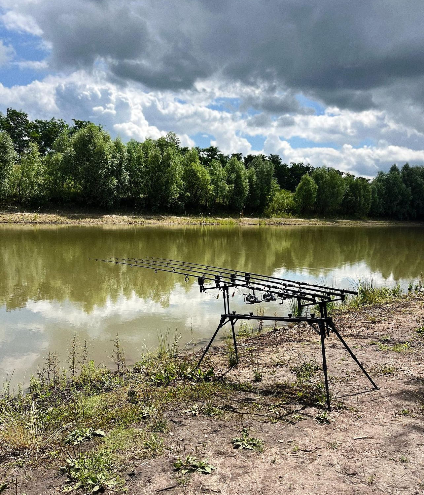
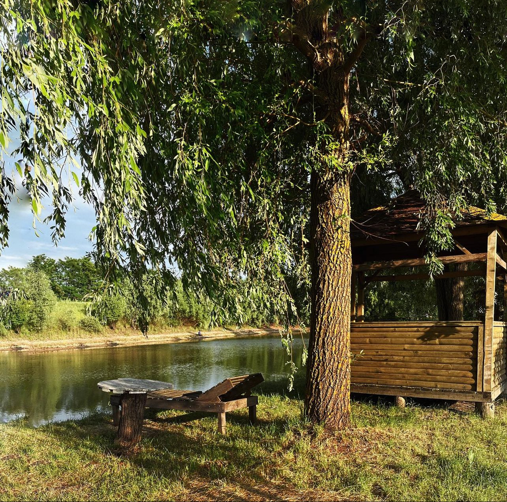
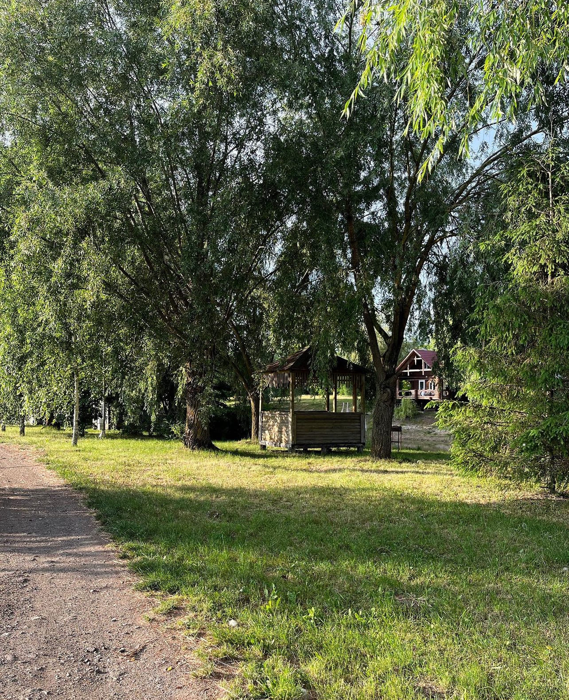
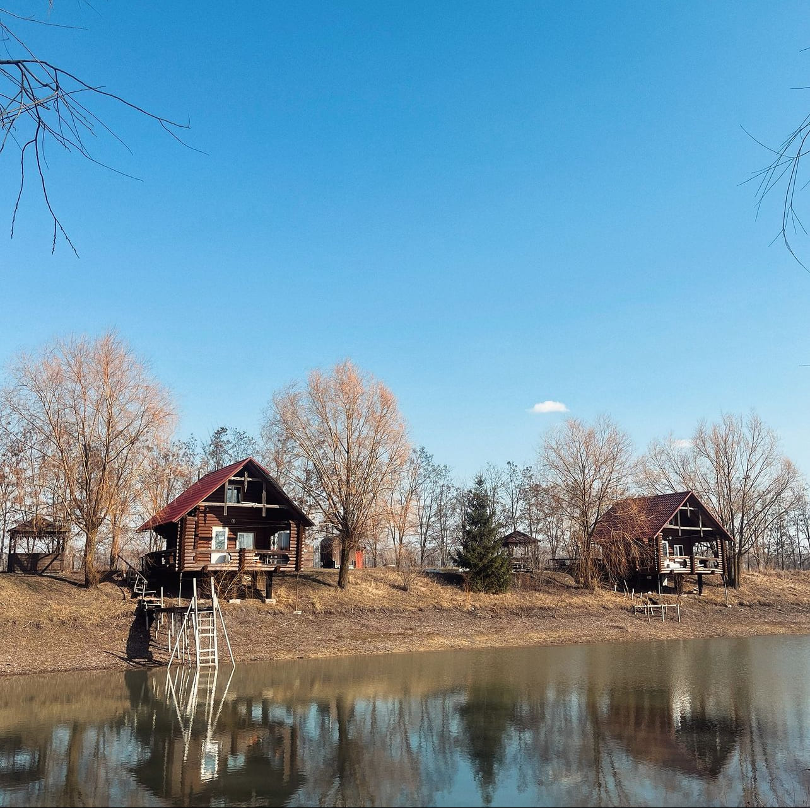
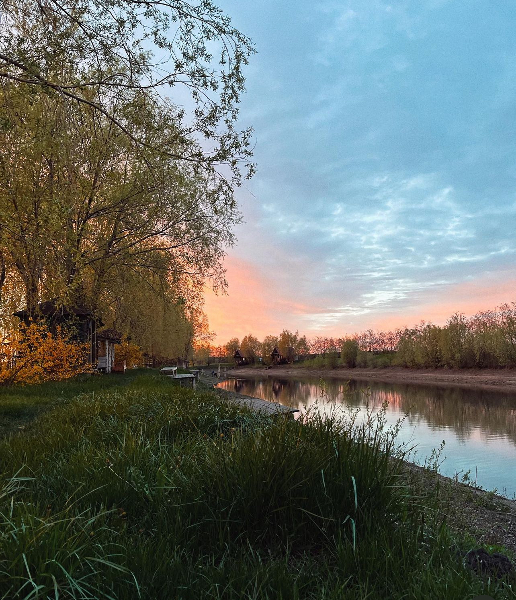
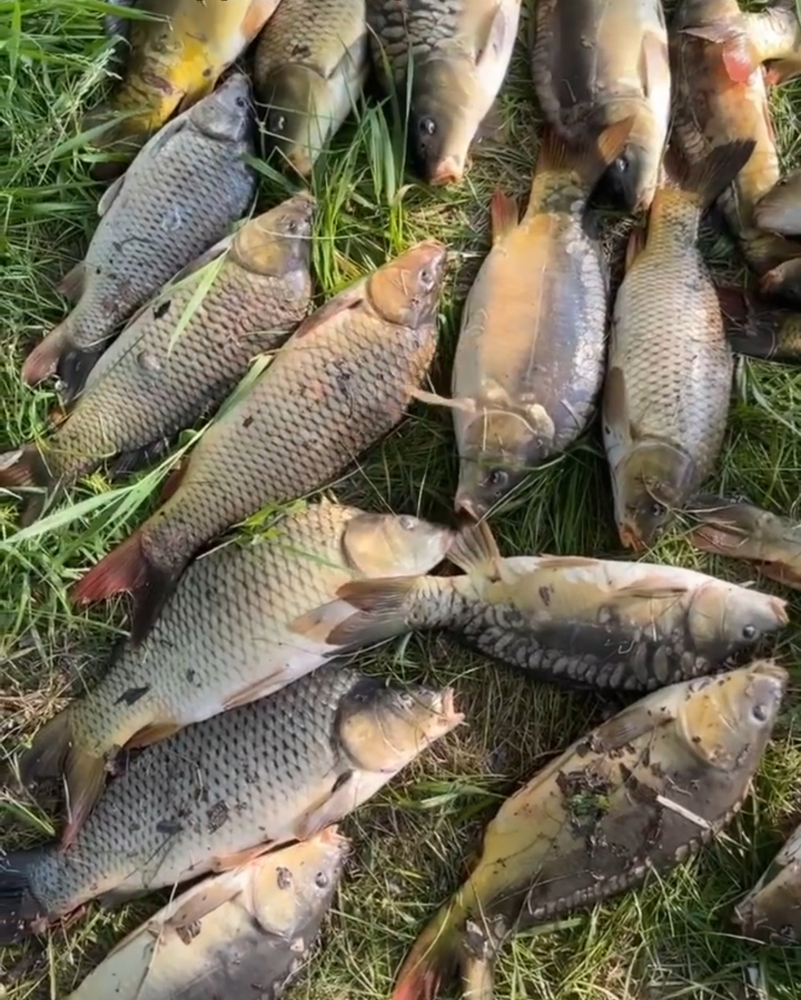
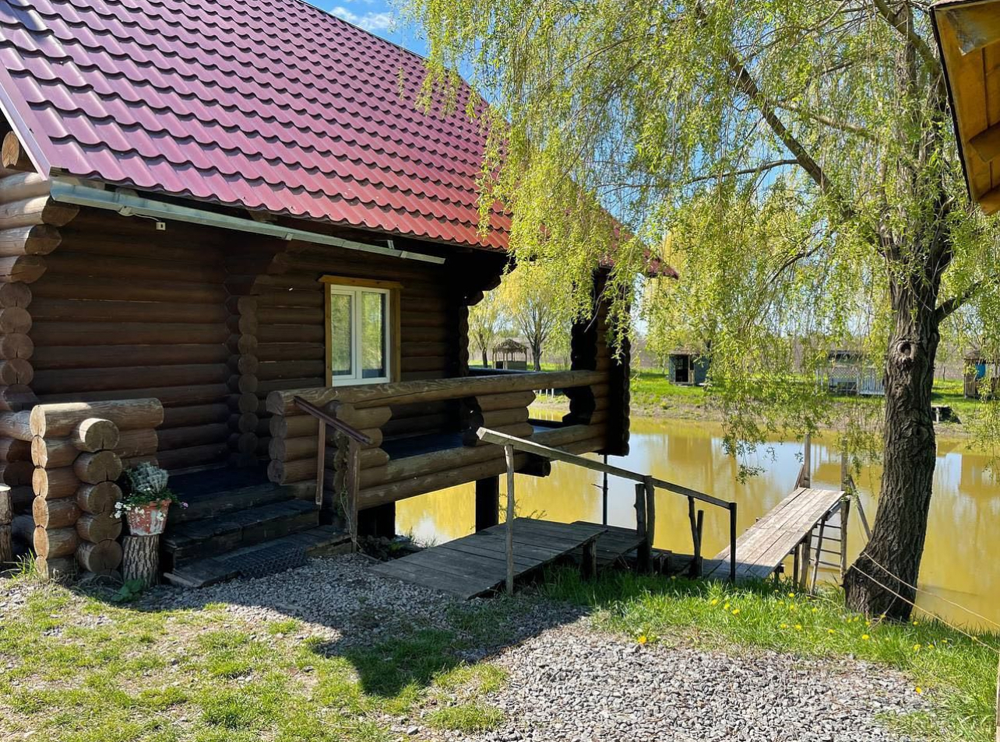
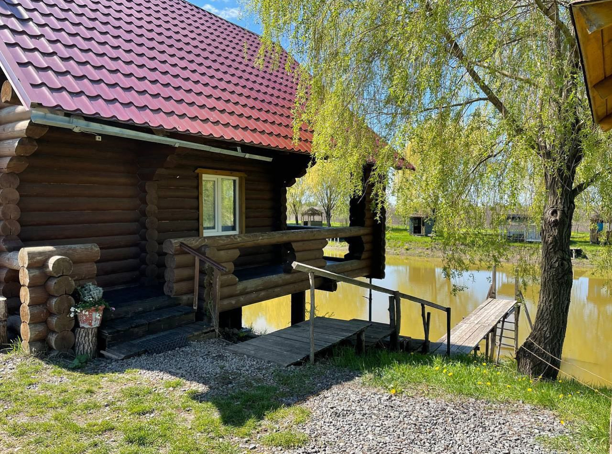

Риболовля
Наші ставки - це не лише місце для риболовлі, але й справжня
емоційна справжність для кожного гостя, незалежно від досвіду. Тут
кожен може знайти своє задоволення, навіть якщо це
перший раз, коли ви тримаєте в руках вудочку. Безліч
емоцій та вражень подарували нашим водоймам
неповторний шарм. Чи ви рибалка на досвіді, чи тільки
починаєте добувати знання в цій сфері, наші ставки завжди стануть
цікавим місцем для вашого відпочинку.

Альтанка та мангал
На нашій базі є два типи альтанок: одні призначені для
великих компаній, а інші - для невеликих груп. Біля кожної
альтанки розташований мангал, де ви зможете приготувати
смачну їжу на природі. А щоб забезпечити вам ще більше комфорту,
навколо альтанок розсаджені дерева, які надають
природну тінь і захищають вас від прямих сонячних променів.
Це демонструє
нашу турботу
навіть до таких дрібниць, щоб ваш відпочинок був максимально
приємним і комфортним.

Чудова природа
Наша база розташована далеко від шумних доріг, що дає вам
можливість повністю зануритися у природне спокоємство. Навколо нас
лише спокійні поля, а здалеку чути мелодійний
спів пташок та мирні всплески риби. Тут ви можете
насолоджуватися атмосферою безмежної природної краси і
відновити гармонію з собою.

Будинки
Наші два будинки близнюки - це чудовий варіант для
відпочинку біля ставку. Дерев'яні, двоповерхові будиночки
розраховані на 4 та 6 осіб, забезпечують вам комфортне
проживання під час відпочинку на природі з рідними та друзями.
Кожен будинок має вихід до ставку, що дає змогу
насолоджуватися риболовлею прямо під вашими вікнами. А для
приємних вечорів з барбекю ми пропонуємо вам
альтанку з мангалом, розташовану поруч з будинком.
Таким чином, ви можете насолоджуватися як риболовлею, так і
приготуванням смачної їжі з комфортом усієї вашої компанії.

Два ставки
Головними принадами нашої бази є два штучних ставки.
Менший ставок повністю заселений карасем, тоді як більший
має змішане населення, включаючи крупну рибу. Зверніть
увагу, що рівень води в наших ставках знизився, але це не
становить перешкоди для успішної риболовлі. Ми продовжуємо
покращувати рівень води, проте це потребує часу. Якщо вас
цікавлять улови наших гостей, ви можете переглянути їх
нашому інстаграм-акаунті "rasavka".

Різноманітність риби
На нашій базі ви зможете зустріти різноманітні види риби, які
включають як мирні, так і хижаків. Окрім звичайних
карасів, яких тут багато, ми також запустили рибу різних розмірів,
вагою від 1 до 5 кг. А для справжніх любителів
екстремального риболовлі, у нас є трофейні види, які можуть важити
до 10 кг. Наш змішаний за складом рибою ставок містить
чотири види риби: коропа, білого амура, товстолоба та щуку.
А якщо ви шукаєте ексклюзивне риболовне враження, то поруч
розташований окремий ставок, де можна спробувати свої сили
лише з карасем. Незалежно від вашого досвіду, у нас є риба для
будь-якого смаку та переваги!
 
